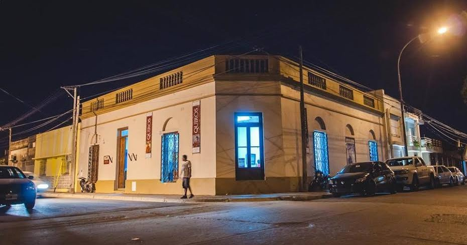

Identidad cultural
Gualeguay conserva una rica herencia cultural que se manifiesta en sus fiestas populares, sus museos, la música entrerriana y las costumbres transmitidas de generación en generación, con una impronta muy cercana y orgullosa.
Las artesanías en cuero, madera y tejidos son parte del saber hacer local y siguen dando forma a una identidad bien propia.

Manifestaciones culturales destacadas

Museos y patrimonio
El Museo Quirós y otros espacios culturales resguardan la memoria histórica y artística de la ciudad, acercando su legado a cada visita.
Artesanías locales
El trabajo en cuero, madera y tejidos es parte de la identidad artesanal de Gualeguay, con piezas únicas que reflejan el saber hacer de sus artesanos.
Música entrerriana
La chamarrita, el chamamé y la milonga suenan en peñas y festivales que mantienen viva la música popular de la región y acompañan las reuniones más sentidas.
Para conectar con la identidad local
Patrimonio vivo
Museos y espacios culturales conservan la memoria artística e histórica de Gualeguay con una mirada cercana y muy humana.
Música y peñas
La chamarrita, el chamamé y la milonga siguen presentes en encuentros que reúnen a vecinos y visitantes alrededor de la música popular.
Artesanías con identidad
El trabajo en cuero, madera y tejidos refleja un oficio que se transmite con orgullo de generación en generación y sigue muy presente en la vida local.
Datos curiosos
Tradiciones que siguen vivas
Muchas costumbres culturales de Gualeguay se mantienen activas porque forman parte del día a día de la comunidad.
Arte cercano
Los espacios culturales de la ciudad suelen acercar el arte de un modo simple, sin perder valor ni historia.
Música con raíz
La música entrerriana acompaña peñas y celebraciones, y ayuda a contar quiénes somos sin necesidad de muchas palabras.